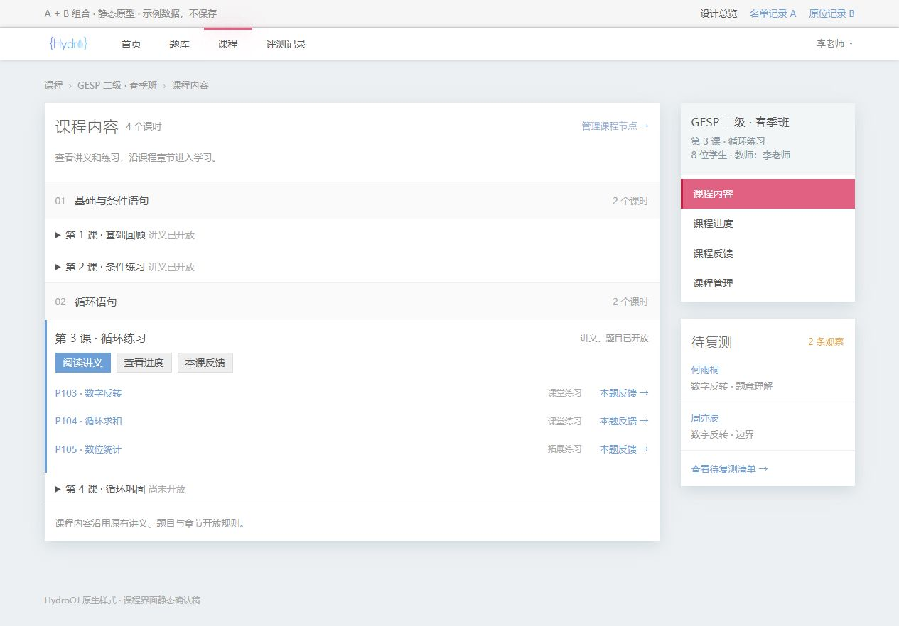
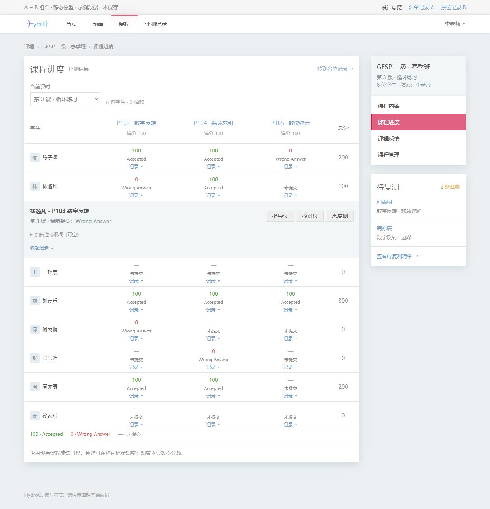
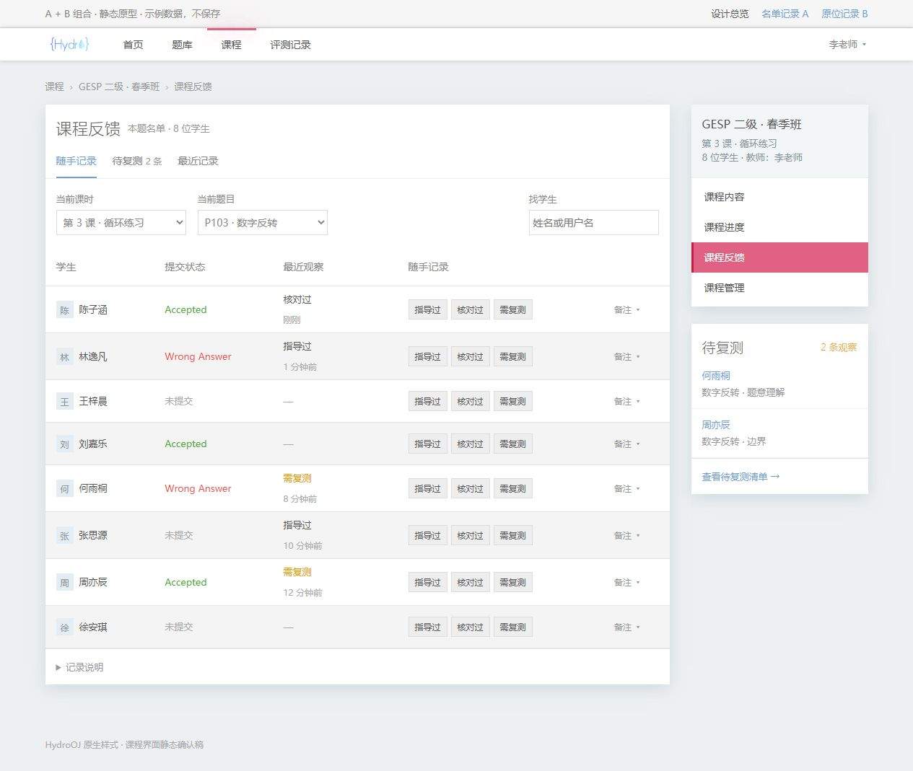
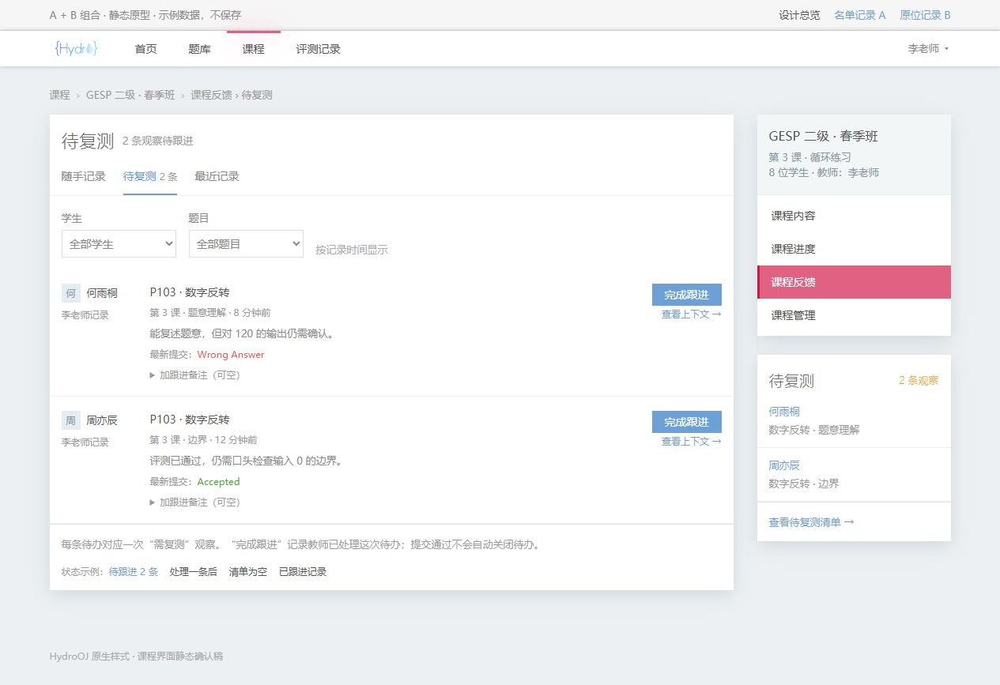
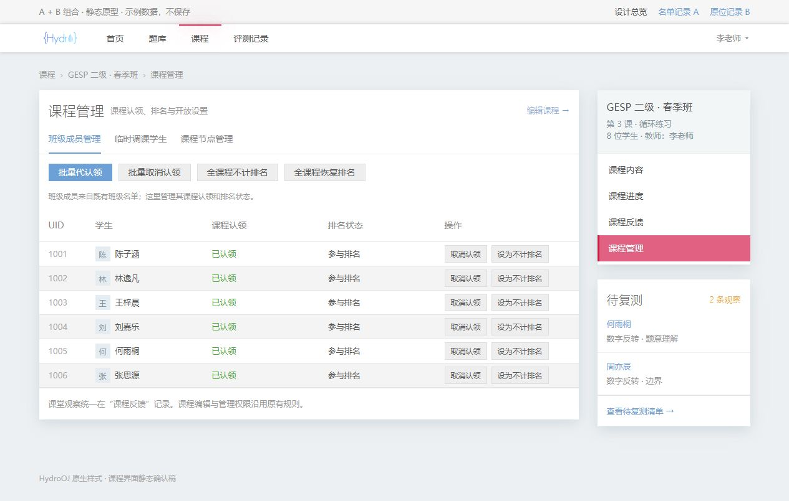
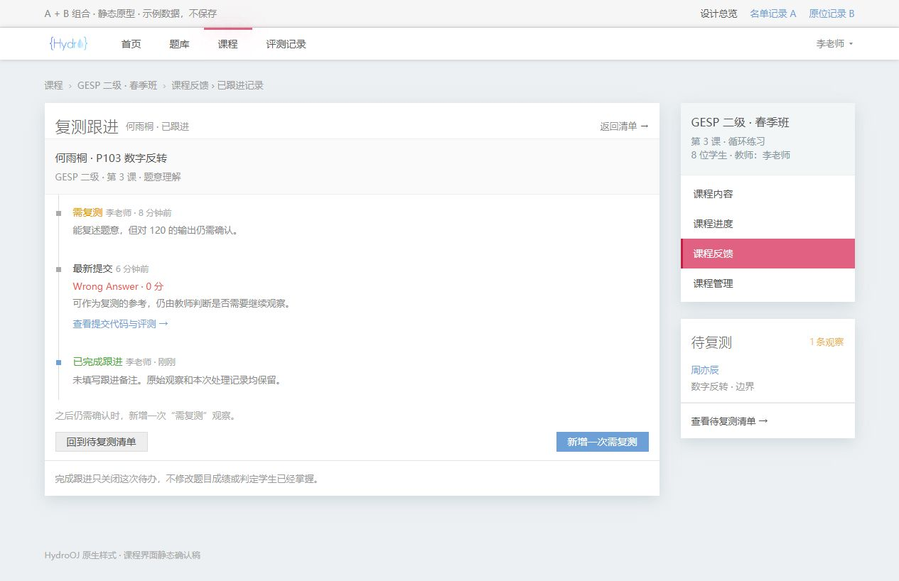

课程界面 · A + B 组合确认稿
保留已确认的 HydroOJ 表格与右侧课程导航。A 负责整班连续记录，B 负责看进度时顺手记录，两处保存到同一份课程反馈。
课程内容

课程进度 · B

课程反馈 · A

待复测

课程管理

完成跟进后

教师的最小操作路径
整班记录：选课时和题目一次 → 对学生点“指导过／核对过／需复测”。
进度表记录：点学生 × 题目的“记录” → 点一个动作。
复测跟进：看待办已有上下文 → 点“完成跟进”；备注、细项、关联提交均可空。
进度表记录：点学生 × 题目的“记录” → 点一个动作。
复测跟进：看待办已有上下文 → 点“完成跟进”；备注、细项、关联提交均可空。